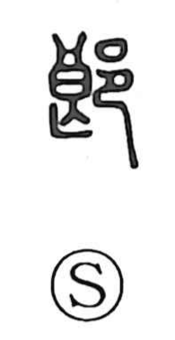

郎

Kun: otoko | On: rou
young man ・ man ・ husband ・ official title ・ lord
Explanation
郎 is a phono-semantic character. Its early form writes 郎 with 良 as the phonetic, which gives the on reading and carries the idea of “good.” 良 originally depicted a winnowing implement that sent air through grain to drive off the chaff, keeping only the sound kernels; from this act of selecting the good it came to mean “good.” In 郎, that phonetic not only supplies the sound but also suggests a “good man,” and the character was used for naming a male child, for a young man or husband, as a polite address (“lord,” “you”), and as the title of an official post.